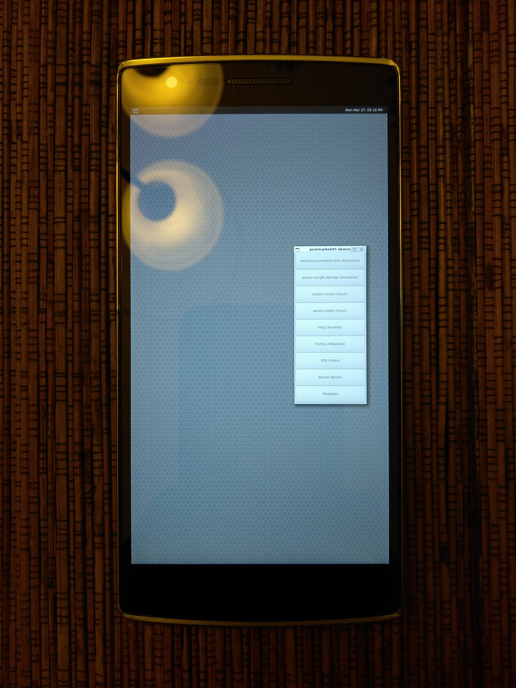

OnePlus One (oneplus-bacon)
|
 OnePlus One running Weston | |
| Manufacturer | OnePlus |
|---|---|
| Name | One |
| Codename | oneplus-bacon |
| Released | 2014 |
| Category | testing |
| Original software | Android |
| Original version | 4.4.2 on Linux 3.4 |
| Hardware | |
| Chipset | Qualcomm Snapdragon 801 (MSM8974AC) |
| CPU | Quad-core 2.5 GHz Krait 400 |
| GPU | Adreno 330 |
| Display | 1080x1920 IPS |
| Storage | 16/64 GB |
| Memory | 3 GB |
| Architecture | armv7 |
{kind=link}
| USB Networking |
Works
|
|---|---|
| Flashing |
Works
|
| Touchscreen |
Works
|
| Display |
Works
|
| WiFi |
Works
|
| FDE |
Broken
|
| Mainline |
Works
|
| Battery |
Works
|
| 3D Acceleration |
Partial
|
| Audio |
Broken
|
| Bluetooth |
Works
|
| Camera |
Broken
|
| GPS |
Broken
|
| Mobile data |
Works
|
| SMS |
Works
|
| Calls |
Broken
|
| USB OTG |
Broken
|
| NFC | |
| Accelerometer |
Broken
|
|---|---|
| Magnetometer | |
| Ambient Light | |
| Proximity | |
| Hall Effect | |
| Barometer | |
| Power Sensor | |
| Camera Flash | |
|---|---|
| Keyboard | |
| Touchpad | |
| USB-A | |
| HDMI/DP | |
| Ir TX | |
| Ir RX | |
| Stylus | |
| Haptics | |
| Ethernet | |
| FOSS bootloader | |
Contributors
- flacks
- Nimayer
- Julian Goldsmith
Users owning this device
- 00p513
- Bdju (Notes: water damaged and doesn't boot)
- Eloy (Notes: Broken touchscreen)
- IonAgorria (Notes: PMOS - OK, slighly damaged screen)
- Jrg (Notes: Broken touchscreen)
- Ksqeib (Notes: Using as Minecraft Server)
- Maufl
- Nimayer
- Noocsharp
- Nspire
- Poipa
- Toastal (Notes: tried pmOS running XMPP server, but plagued with hard drive issues after a few days running that make it go read-only every time I reinstall the OS)
- Val (Notes: PmOS for Docker server)
- Vipaol
- Z3ntu
Installation
After installing pmbootstrap, build the image:
$ pmbootstrap init
$ pmbootstrap install --split
Then to flash it, put your device in fastboot mode, and plug it into your USB port. Currently, you will need to break apart the subpartitions before flashing:
$ pmbootstrap export
$ fastboot erase system
$ fastboot flash boot /tmp/postmarketOS-export/boot.img
$ fastboot flash cache < work dir>/chroot_native/home/pmos/rootfs/oneplus-bacon-boot.img
$ fastboot flash userdata < work dir>/chroot_native/home/pmos/rootfs/oneplus-bacon-root.img
Entering fastboot mode
From a power off state, hold the volume up and power buttons until the device vibrates. The display should then light up and say "Fastboot Mode".
WiFi and Bluetooth
WiFi and Bluetooth are working, but aren't well-tested. The firmware isn't packaged yet, so you will need to get it from the partitions on your device. For Bluetooth, you will need to install bluez and enable the bluetooth service.
Cell usage
oFono support shouldn't take too much to get up and running. Adding the remoteproc node, using qmictl (possibly more utilities), and using a patched oFono should get basic support up and running.
Troubleshooting
Fastboot unknown chunk type
Nimayer received the message "FAILED (remote: Unknown chunk type)" when trying to flash the rootfs to userdata.
It may be possible to fix the issue by flashing a new OxygenOS image. If that doesn't work, try flashing postmarketOS using a recovery zip.
wlan0 interface is available but WiFi is not working
Check that wlan0 device MAC address is not 00:00:00:00:00:00. If it is, change it to any other available one like this:
# ip link set dev wlan0 address 70:85:c2:d9:2b:e0
If the Mac is not 00:00:00:00:00:00 try to restart NetworkManager by executing:
# sudo service networkmanager restart
Most likely you want create Initscript for working network when boot.
Create /etc/init.d/wlanhwaddr:
#!/sbin/openrc-run
command=/sbin/ip
command_args="link set dev wlan0 address 70:85:c2:d9:2b:e0"
description="WLAN hw-addr setter"
depend() {
before networkmanager
}
Install:
# sudo chmod 755 /etc/init.d/wlanhwaddr
# sudo rc-update add wlanhwaddr
Links
- Device package
- Kernel package (close to mainline)
- Kernel package (downstream vendor)
- Quick setup script for Docker
- UbuntuTouch port of this device